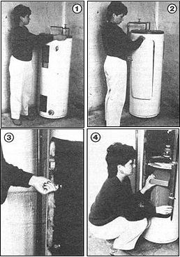

Staff Photos
[1] All it takes is a gentle nudge to persuade this seemingly ordinary appliance to . . . [2] show its true side. By removing the magnetically fastened cover panel and . . . [3] unlocking the access door, you'll expose . . . [4] a well-protected storage area that's roomy enough to accommodate anything from a pocket watch to a 12-gauge. The idea can, of course, be adapted to a water heater of any size